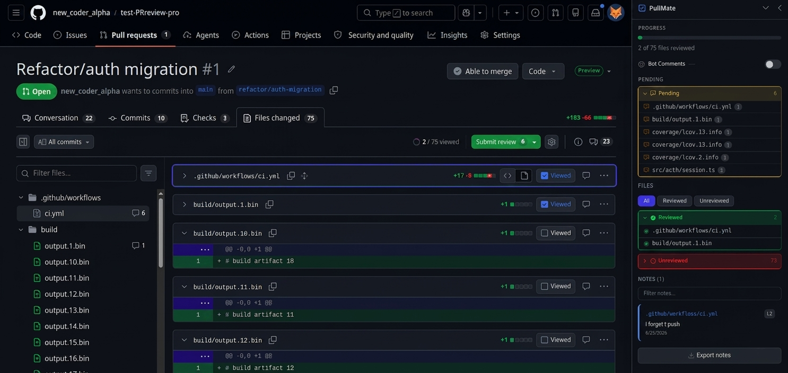

Join early adopters using PullMate to review PRs faster and with more consistency. A persistent sidebar tracks your progress, filters files, hides bot noise, manages checklists, and keeps private notes — all without leaving the page.

Every feature is designed around how developers actually review code.
Add notes on specific diff lines. Search, filter, and export as Markdown.
Built-in General template. Additional Security & Performance templates with Pro. Drag-and-drop overlay.
Auto-tracks time per PR with idle detection. Know exactly how long reviews take.
GitHub's native PR interface is powerful but lacks a dedicated toolset for systematic reviews. PullMate fills the gap with a purpose-built sidebar.
PullMate adds a persistent sidebar that syncs with GitHub's "Viewed" toggle — showing your progress at a glance without scrolling.
One click (or Alt+B) to hide all bot comments. Focus on human feedback that matters.
Jot down thoughts on specific lines without submitting a public comment. Markdown export included.
Jump between unreviewed files, toggle the sidebar, mark files reviewed — all from the keyboard.
Free for individuals. Pro for power users who need unlimited private notes.
Tracks which files you've reviewed by syncing with GitHub's native "Viewed" toggle. Shows a progress bar and count in the sidebar. Persists across page reloads.
Extension icon shows the count of unsubmitted review comments. Helps you keep track of pending feedback before submitting your review.
Hide or show bot comments with a single toggle in the sidebar or the Alt+B shortcut. Focus on real human feedback.
Files organized into All, Reviewed, and Unreviewed sections with pending comment indicators. Click any file to scroll directly to it.
Alt+N next unreviewed · Alt+P previous · Alt+M mark reviewed · Alt+B toggle bots · Alt+T toggle sidebar · Alt+C toggle checklist. Fully remappable.
Add private notes on individual diff lines. Small icon appears next to line numbers. Notes panel with search and Markdown export. 2 notes free, unlimited with Pro.
General template included. Security & Performance and custom templates with Pro. Drag-and-drop overlay with checkbox progress tracking.
Auto-tracks time spent per PR with idle detection and tab-awareness. View your total review time directly in the sidebar. 90-day data retention.
Private inline notes let you capture thoughts, questions, and observations on specific lines of code — without cluttering the public review thread. When you're done, export everything as Markdown for your records.
Upgrade to ProInstall PullMate for free and transform the way you review pull requests on GitHub. No sign-up required.
Senior engineers reviewing large PRs
Team leads handling review queues
OSS maintainers reviewing community contributions
Security & performance focused reviewers
Data stays in your browser. No server required.
Minimal footprint. Only activates on GitHub PR pages.
Activates directly on GitHub PR pages. No setup.
PullMate runs entirely in your browser. We don't have servers, we don't collect telemetry by default, and we don't sell data. Every permission requested has a single purpose: making PR reviews faster.
PullMate activates only on GitHub pull request pages to detect the diff and inject the sidebar, progress tracker, and review tools. It never reads or modifies other content.
Your progress, notes, settings, and license key are stored in your browser's local storage. Nothing leaves your machine except anonymous error reports (if opted in) and license validation with Dodo Payments.